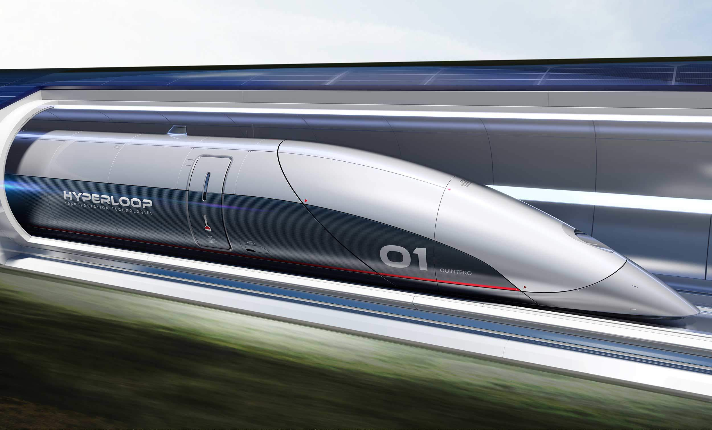
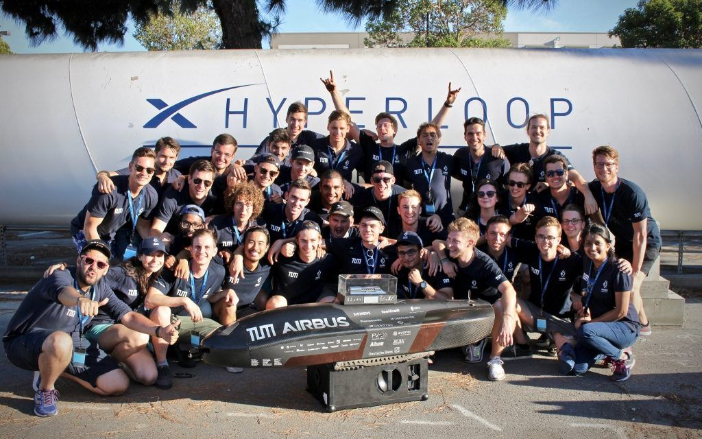
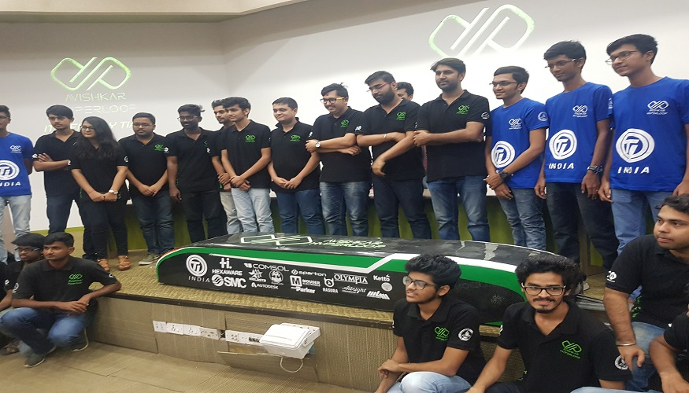

WHAT IS HYPERLOOP ?
Hyperloop is a new form of ground transport currently in development by a number of companies, It could see passengers travelling at over 700 miles an hour in floating pod which races along inside giant low-pressure tubes, either above or below ground.
The Hyperloop is a proposed high-speed transportation system in which specialized pods are accelerated through a low-pressure tube to achieve speeds near the speed of sound. The system is intended to provide a more cost-effective and faster mode of travel between cities separated by distances less than approximately nine hundred miles
First conceptualized in 2012 by Elon Musk, the tech entrepreneur leading numerous high-profile companies including SpaceX and Tesla Motors, hypothetical benefits of the Hyperloop include immunity to weather, lack of crashes, rapid speed, low power requirements, and energy generation for its own operation

HYPERLOOP
|
|
|---|
 ELON MUSK
ELON MUSK
HOW IS IT DIFFERENT ?
There are two big differences between Hyperloop and traditional rail. Firstly, the pods carrying passengers travel through tubes or tunnels from which most of the air has been removed to reduce friction. This should allow the pods to travel at up to 750 miles per hour.Secondly, rather than using wheels like a train or car, the pods are designed to float on air skis, using the same basic idea as an air hockey table, or use magnetic levitation to reduce friction.
Hyperloop could be cheaper and faster than train or car travel, and cheaper and less polluting than air travel.It is lower cost and more energy efficient because, among other things, the track doesn't need to provide power to the pods continuously and, because the pods can leave every 30 seconds, it's more like an on-demand service. It's also potentially two or three times faster than even high-speed rail (and ten times the speed of regular rail services).
HOW DOES A HYPERLOOP TUBE WORK ?
The basic idea of Hyperloop as envisioned by Musk is that the passenger pods or capsules travel through a tube, either above or below ground. To reduce friction, most -- but not all -- of the air is removed from the tubes by pumps.
Overcoming air resistance is one of the biggest uses of energy in high speed travel. Airliners climb to high altitudes to travel through less dense air; in order to create a similar effect at ground level, Hyperloop encloses the capsules in a reduced-pressure tube, effectively allowing the trains to travel at airplane speeds while still on the ground.
In Musk's model, the pressure of the air inside the Hyperloop tube is about one-sixth the pressure of the atmosphere on Mars (a notable comparison as Mars is another of Musk's interests). This means an operating pressure of 100 pascals, which reduces the drag force of the air by 1,000 times relative to sea level conditions, and would be equivalent to flying above 150,000 feet.
HYPERLOOP TUBE
HOW DO HYPERLOOP CAPSULES WORK ?
The Hyperloop capsules in Musk's model float above the tube's surface on a set of 28 air-bearing skis, similar to the way that the puck floats just above the table on an air hockey game. One major difference is that it is the pod, not the track, that generates the air cushion in order to keep the tube as simple and cheap as possible. Other versions of Hyperloop use magnetic levitation rather than air skis to keep the passenger pods above the tracks.
The pod would get its initial velocity from an external linear electric motor, which would accelerate it to 'high subsonic velocity' and then give it a boost every 70 miles or so; in between, the pod would coast along in near vacuum. Each capsule could carry 28 passengers (other versions aim to carry up to 40) plus some luggage; another version of the pods could carry cargo and vehicles. Pods would depart every two minutes (or every 30 seconds at peak usage).
HYPERLOOP CAPSULE
WHATS IS HYPERLOOP POD COMPETITION ?
In order to accelerate the development of functional prototypes and encourage student innovation, SpaceX announced the Hyperloop Pod Competition in 2015, which challenges university teams to design and build the best transport pod, judged by different criteria each time. In 2018, the focus was the maximum speed for a self-propelled pod on the test track, or as the competition puts it: "Fastest time without crashing wins!". In 2019 it was judged on maximum speed with successful deceleration.

HYPERLOOP POD COMPETITION WINNERS 2019
|

HYPERLOOP POD DESIGN BY IIT MADRAS
|
|---|
WHATS NEXT FOR HYPERLOOP ?
Hyperloop is a technology that, for its supporters at least, could have a huge impact. It could reduce air travel between big cities, boost economies and trade, and reduce the pressure on housing in cities by allowing commuters to live further away. But none of this is anywhere near proven -- yet. There are major technical and business hurdles that Hyperloop technologies will need to surmount before they can carry passengers in comfort through a pneumatic tube, let alone change the world.
The next stage for Hyperloop is to move beyond initial testing and feasibility studies, start longer distance trials of the technology and, even more importantly, testing the service with passengers. Another challenge will be to find commercial models that work around the world. Only when all this is done will it become clear whether Hyperloop can really become a success.